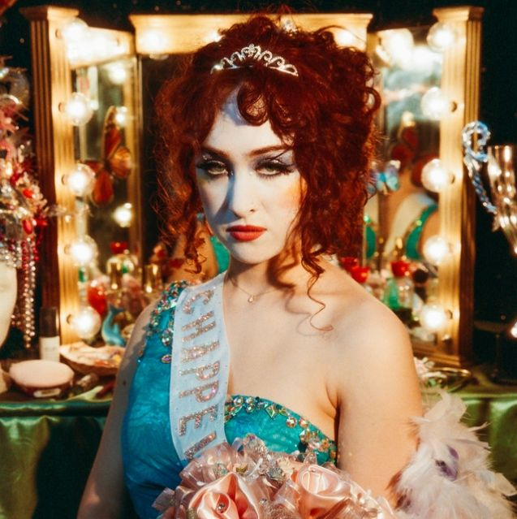
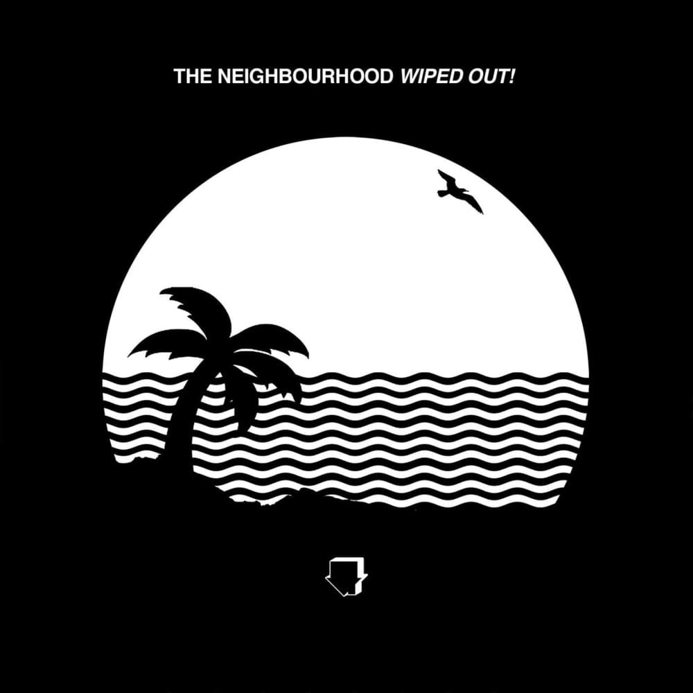

Olá mundo cruel!
Esses parágrafos foram estilizados pelo CSS.
+ imagens
Exercício: Seletor por ID

Gigi's playlist

> Casual - Chappel Roan
Is it casual now?
I know what you tell your friends
Baby get me off again
Is it casual now?
> Reflections - The Neighboorhood
We were too close to the stars
i've never knew somebody lile you, somebody
Falling just as hard
i'd rather loose somebody than use somebody
Maybe it's a blessing in the skies
I see my reflection in your eyes!
> Good Looking - Suki Waterhouse
The skyline falls as I try to make sense of it all
I thought I'd uncovered your secrets but,
turns out, there's more
You adored me before
Oh, my good looking boy...

> Baby Came Home 2 / Valentines
Well, don't you sit in front of me and wait for me to talk
You can call me up
Phone works two ways, you know?
This time, baby, yeah, I think that I'll be just fine
I wish I could say the same for you.
> Some - Steve Lacy
Baby, I want some of your love
Your love (your love), your love
Baby (baby), can I have some of your love
Your love, your love?
> Infrunami - Steve Lacy
Girl, you're the one I want
You're the one I need
I'm beggin' you, please
Can you come back to me?
'Cause I was blind to see
That you were right in front of me
> Pretty boy - The Neighboorhood
Pretty boy, you did this with me, boy
Now it's all about to end
Baby girl, look where we made it, girl
Hmm, now we're falling
As long as I got you!
> Promise - Laufey
It hurts to be something
It's worse to be nothing with you
I've done the math
There's no solution
We'll never last
Why can't I let go of this?